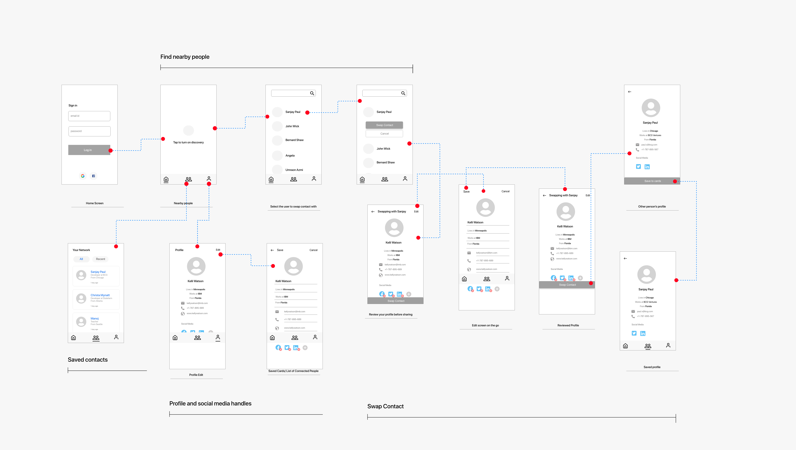

Swiping contacts faster
Product Design | Aug'19-Dec'19
Charles Chung, Kenneth, Whyndham, Phalguna and Pragati
Overview
Problem
How can we help people swap contact with each other during business events, networking events and social gatherings faster and easily?
Our Solution
We came up with bluetooth based wireless sharing of contact in a way that for users the solution seemed seamless and users could connect with people/exchange contact information much faster without hassle. Our solution included three features, namely, a profile section with all the contact information, allowing discovery to let others view ones profile, and accessing someone's profile to save their contact in the form of cards
Hypothesis
Once in a while exchange of contact or connecting with someone, might not seem like an issue, but in case of social gatherings meant for networking where people meet new people, the number of social media choices can cause decision lag, distraction and hassle. We conducted primary and secondary research to test our hypothesis before setting out to design.
Research Question
How might we improve the experience of sharing contact information between two people during casual and professional meet-ups?
Our Approach

My Role
Being the only designer in the team, I led the research as well as design of the application. The research work included interviews, competitive study and affinity mapping which was done collaboratively. After the research phase, I designed the wire-frames, conducted feedback sessions and designed multiple mid-fidelity prototypes.
Research
Comparative Analysis
We started with competitive analysis and studied the existing platforms and how they make the exchange of contact information easier. Although these apps catered only to their services, the study helped us understand their approach and identify problems and opportunities. We also studied apps which tried to cater to all the platforms together and emphasized on easier exchange. Most applications of this kind were business card focused and lacked any user centered approach in their solution.


User Interviews
We interviewed 9 users between the age of 22-29, most of the were students and new in the city looking to network for jobs, dating apart from one who had recently graduated were

Affinity Mapping & Storyboard
Once we had completed our interviews and comparative and competitive analysis we synthesized our results through affinity mapping and storyboarding the current journey of the user.


User Personas

Ideation
Brainstorming & Conceptualization
Our team sat together and we decided to brainstorm ideas at this stage without thinking about feasibility. The biggest hurdle for the other team members was not thinking about solution and concentrating on the problem and let the research inform the solution. We were successful in coming up with three approaches and showed them with the help of user journey for comparison.
Functionalities
Based on the stories we decided the core tasks that our solution will allow users to complete.

VOICE ASSISTANT

LOCATION BASED DISCOVRABLITY

QR BASED CONTACT SCANNING

Now the next step was to choose between these three concepts and drill down the features, technological limitations and concerns. We then evaluated all these idea against our design implications from the last session, and do's and don'ts. We decided to implement the discoverability idea which wasn't very different from QR though the way of interactions and accomplishing the task differed.
Wireframes
We started with paper prototype to explore the interaction flow. Once we finalised the interaction flow we drew wireframes to inform our mid-fidelity prototype.


Refined goals & user-feedback
We had following goals when we set out to get user feedback.
- General emotional response to the solution
- Are people comfortable with this method of sharing contact information?
- Does this solution reduce the time and cognitive load ?
- What are the possible gaps between our design and user’s mental model?
- Any issues in the flow. Users are able to complete the task or not.
- Some users had concern with the privacy and they wanted to know if they can disconnect the app from their social media.
- We found that users struggled with understanding the flow first and they did not know what new connect meant.
- Discoverability button was confusing, and did not convey connecting or sharing contact information.
Hi-fi Prototype
For the first iteration I focused on designing the core features and flows of the application so that we could test if the design is simplifying the process or not. I used Adobe XD to make make the hi-fidelity prototype.

Evaluation
User Testing Process
I and Kenneth conducted cognitive walk-through with 8 users with different goals of networking. We introduced our goal and the concept, and described the activity to help them ease up. We then described the scenario, and let users use the app. while thinking aloud. As they completed every task we asked them to reflect back on the task and fill up a questionnaire.
Feedback & Design Interaction
We conducted cognitive walk-through with 6 users to test our first iteration of the hi-fidelity prototype and found that
- users thought they had to click on yellow notification to activate discovery. The notification feature wasn't clear,
- users wanted to be able to choose the social media platform they wanted to share,
- 3 users found the profile interface overwhelming.
- 4 of the 6 users had difficulty understanding they can edit what they share on the go.
- 2 users used the word 'complicated' for the solution
Final Prototype
We made changes in visual design and some of the flows addressing the concerns and evidences from the user testing. The final prototype shows nearby users who can readily share their information.
Lessons Learned
Storyboarding any journey either existing situation or the solution can bring up very important subtle issues that one might not imagine. In this project we drew a lot of stories for different settings and contexts to help the team empathize with different user persona. The story boarding was also necessary to have the entire team on the same page especially when we had 3 developers and two designers.
We also realized that an easy and efficient task is not necessarily the one that takes less time it is also about cognitive load. Even if we do not reduce the time taken in exchange of contact drastically, reducing the inertia and uneasiness and a feeling of smooth completion of task matters.